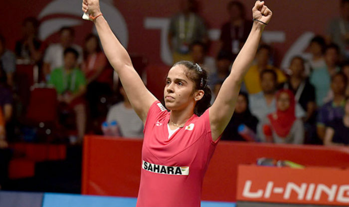

Saina becomes first Indian to win two singles golds in badminton.

Saina Nehwal became the first Indian to win two singles golds at the Commonwealth Games after defeating PV Sindhu 21-18, 23-21 in a hard-fought final in the women's singles on Sunday. Saina had also won the title in 2010 in New Delhi. The win meant that she won all her 12 matches in Gold Coast and stayed unbeaten throughout in the tournament. EDITOR'S PICKS Badminton stars throw Gold Coast party to remember With flags, cheers and not the most appropriate of Bollywood songs, the Indian fans in Gold Coast were privy to the most happening party in town after witnessing the badminton team make Games history. It was Saina who got off to the better start and led 11-6 at the changeover in the opening game as she tried to move Sindhu around the court and made her lunge forward after pushing her deep frequently. Saina, in fact, had won two of their three career meetings and had also defeated Sindhu in the final of the national championships last year. Saina had missed the last edition in Glasgow, where Sindhu won bronze, and she looked hungry to become the first Indian to win two singles golds in badminton at the quadrennial event. Despite being troubled by injuries over the last two years and playing her 11th match in 11 days, Saina showed no signs of fatigue and her movement was way better than it has been at any time this year. Saina had six game points in the opening game at 20-14 but Sindhu saved four of them before Saina eventually won the opening game in 22 minutes.